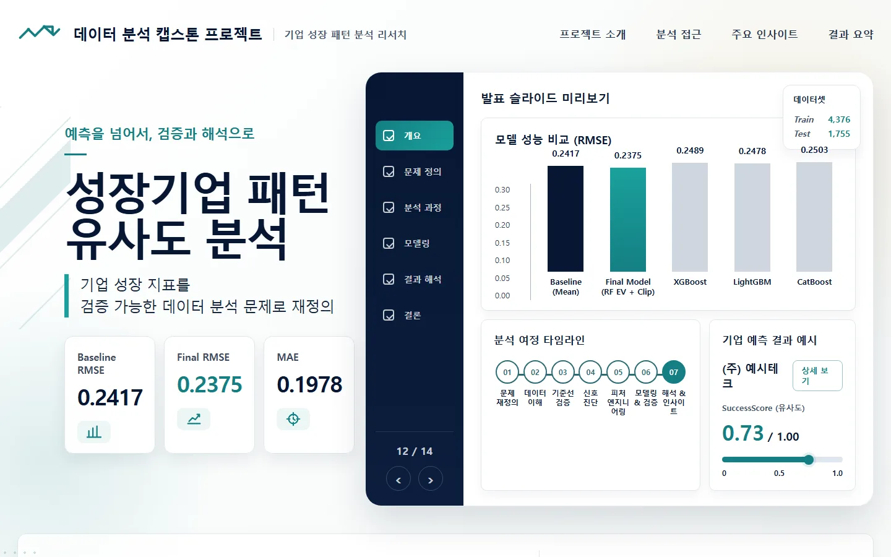
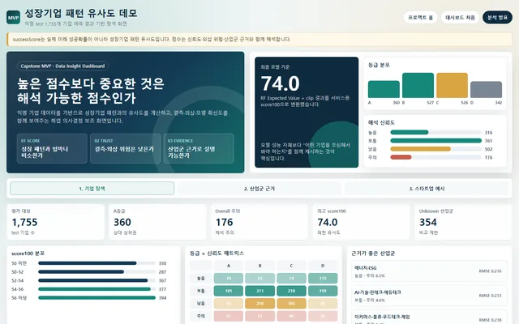
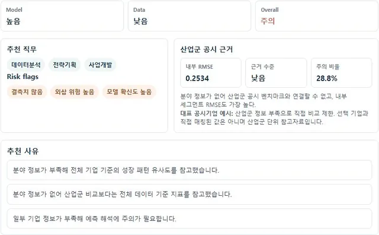
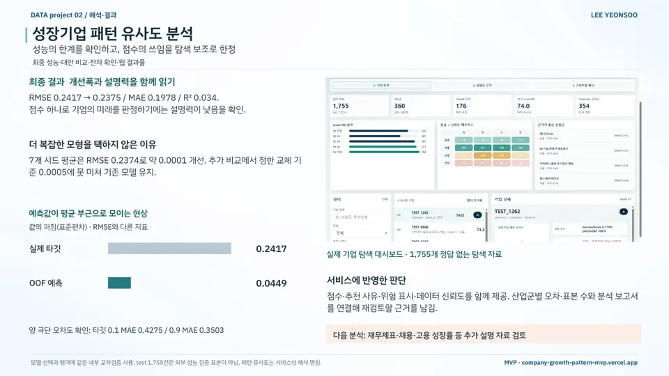

데이터 분석 / MVP 구현 / 기업·창업
성장기업 패턴 유사도 분석
Growth-Company Pattern Similarity Analysis
모델 성능의 한계를 짚고, 점수를 기업 탐색 보조지표로 재정의
현재 상태탐색 대시보드 배포
- 기간
- 2026 · 데이터 분석 캡스톤 (중간·기말 발표)
- 팀
- 개인
- 내 역할
- 개인 프로젝트 · 전처리·모델 비교·대시보드 제작·배포
- 도구
- 수상
- —
내 기여전처리부터 기준선·신호 진단, 모델 비교와 재설계, 잔차 분석, 대시보드 제작·배포까지 혼자 진행했습니다.
사진·화면


크게 보기
크게 보기대시보드: 점수 분포·등급×신뢰도·근거 산업군출처company-growth-pattern-mvp.vercel.app/d… (새 창) 
크게 보기기업별 결과 카드: 추천 직무·Risk flags·산업군 근거출처company-growth-pattern-mvp.vercel.app/d… (새 창)


발표 자료

크게 보기포트폴리오 슬라이드 7쪽 · 본문 내용을 한 장으로 정리한 슬라이드

문제
DACON 기업 성공확률 데이터로 만든 점수가 실제 미래 성공확률처럼 읽힐 위험이 있었습니다. 타깃은 8개 이산값(0.1~0.9)이고 설명력도 제한적이라, 예측을 어디까지 믿을지부터 따졌습니다.
접근
- Train 4,376건 / Test 1,755건 EDA와 결측·타깃 분포·학습/평가 분포 차이 점검
- 기준선 5종(전체 평균·중앙값·분야별·투자단계별)으로 기준 RMSE 0.2417 확정
- 신호 진단: Mutual Information · Permutation Test · Learning Curve · Adversarial Validation
- 기업 나이·생산성·투자 효율 등을 가공하고 8개 이산 타깃에 맞춰 RandomForestClassifier 기대값 방식 적용
- 잔차·산업군별 RMSE로 안정 구간과 주의 구간을 나누고 위험 표시(riskFlags) 설계
핵심 판단
7개 시드 평균 RMSE 개선 약 0.0001이 교체 기준 0.0005에 못 미쳐 기존 모델 유지
R²가 낮아 점수를 미래 성공확률로 쓰지 않고 '성장기업 패턴 유사도' 탐색 보조지표로 재정의
점수와 함께 추천 사유·위험 표시·데이터 신뢰도를 제공하고 산업군별 오차·표본 수와 분석 보고서를 연결
결과
- RMSE (기준선 → 최종)0.2417
에서 0.2375 내부 교차검증 · 소폭 개선 - R²0.034설명력이 낮아 탐색 보조로 한정
- 탐색 대시보드1,755개 기업점수·등급·사유·위험 표시
- 내부 교차검증 RMSE 0.2417→0.2375, R² 0.034의 낮은 설명력을 고려해 기업 탐색 보조로 용도 한정
- 예측값 표준편차 0.0449로 타깃의 0.2417보다 작아 평균 부근에 집중
- 산업군별 RMSE: 에너지·ESG 0.2159, AI·핀테크·에듀테크 0.2326으로 상대적으로 안정
- 1,755개 기업 카드(점수·등급·사유·위험 표시·신뢰도)로 탐색 대시보드 구현·배포
AI 활용
머신러닝 점수와 규칙 기반 위험 표시를 사용하며, 생성형 AI 기능은 없습니다.
한계와 다음 단계
모델 선택과 평가에 같은 내부 교차검증을 썼고, 정답이 없는 test 1,755건은 외부 성능 평가에 쓰지 않았습니다. '패턴 유사도'는 서비스의 해석 명칭일 뿐 거리 기반 유사도 모형이 아니며, 점수는 실제 성공확률이 아닙니다.